- 00 开篇词 迎难而上，做云原生时代的弄潮儿.md
- 00 课前准备 动手实践才是最好的学习方式.md
- 01 初识容器：万事开头难.md
- 02 被隔离的进程：一起来看看容器的本质.md
- 03 容器化的应用：会了这些你就是Docker高手.md
- 04 创建容器镜像：如何编写正确、高效的Dockerfile.md
- 05 镜像仓库：该怎样用好Docker Hub这个宝藏.md
- 06 打破次元壁：容器该如何与外界互联互通.md
- 07 实战演练：玩转Docker.md
- 08 视频：入门篇实操总结.md
- 09 走近云原生：如何在本机搭建小巧完备的Kubernetes环境.md
- 10 自动化的运维管理：探究Kubernetes工作机制的奥秘.md
- 11 YAML：Kubernetes世界里的通用语.md
- 12 Pod：如何理解这个Kubernetes里最核心的概念？.md
- 13 Job_CronJob：为什么不直接用Pod来处理业务？.md
- 14 ConfigMap_Secret：怎样配置、定制我的应用.md
- 15 实战演练：玩转Kubernetes（1）.md
- 16 视频：初级篇实操总结.md
- 17 更真实的云原生：实际搭建多节点的Kubernetes集群.md
- 18 Deployment：让应用永不宕机.md
- 19 Daemonset：忠实可靠的看门狗.md
- 20 Service：微服务架构的应对之道.md
- 21 Ingress：集群进出流量的总管.md
- 22 实战演练：玩转Kubernetes（2）.md
- 23 视频：中级篇实操总结.md
- 24 PersistentVolume：怎么解决数据持久化的难题？.md
- 25 PersistentVolume + NFS：怎么使用网络共享存储？.md
- 26 StatefulSet：怎么管理有状态的应用？.md
- 27 滚动更新：如何做到平滑的应用升级降级？.md
- 28 应用保障：如何让Pod运行得更健康？.md
- 29 集群管理：如何用名字空间分隔系统资源？.md
- 30 系统监控：如何使用Metrics Server和Prometheus？.md
- 31 网络通信：CNI是怎么回事？又是怎么工作的？.md
- 32 实战演练：玩转Kubernetes（3）.md
- 33 视频：高级篇实操总结.md
- 加餐 docker-compose：单机环境下的容器编排工具.md
- 加餐 谈谈Kong Ingress Controller.md
- 结束语 是终点，更是起点.md
07 实战演练：玩转Docker
你好，我是Chrono。
学到今天的这次课，我们的“入门篇”就算是告一段落了，有这些容器知识作为基础，很快我们就要正式开始学习Kubernetes。不过在那之前，来对前面的课程做一个回顾和实践，把基础再夯实一下。
要提醒你的是，Docker相关的内容很多很广，在入门篇中，我只从中挑选出了一些最基本最有用的介绍给你。而且在我看来，我们不需要完全了解Docker的所有功能，我也不建议你对Docker的内部架构细节和具体的命令行参数做过多的了解，太浪费精力，只要会用够用，需要的时候能够查找官方手册就行。
毕竟我们这门课程的目标是Kubernetes，而Docker只不过是众多容器运行时（Container Runtime）中最出名的一款而已。当然，如果你当前的工作是与Docker深度绑定，那就另当别论了。
好下面我先把容器技术做一个简要的总结，然后演示两个实战项目：使用Docker部署Registry和WordPress。
容器技术要点回顾
容器技术是后端应用领域的一项重大创新，它彻底变革了应用的开发、交付与部署方式，是“云原生”的根本（[01讲]）。
容器基于Linux底层的namespace、cgroup、chroot等功能，虽然它们很早就出现了，但直到Docker“横空出世”，把它们整合在一起，容器才真正走近了大众的视野，逐渐为广大开发者所熟知（[02讲]）。
容器技术中有三个核心概念：容器（Container）、镜像（Image），以及镜像仓库（Registry）（[03讲]）。
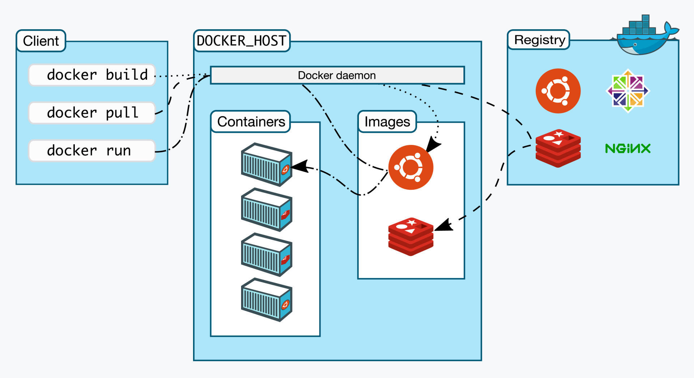
从本质上来说，容器属于虚拟化技术的一种，和虚拟机（Virtual Machine）很类似，都能够分拆系统资源，隔离应用进程，但容器更加轻量级，运行效率更高，比虚拟机更适合云计算的需求。
镜像是容器的静态形式，它把应用程序连同依赖的操作系统、配置文件、环境变量等等都打包到了一起，因而能够在任何系统上运行，免除了很多部署运维和平台迁移的麻烦。
镜像内部由多个层（Layer）组成，每一层都是一组文件，多个层会使用Union FS技术合并成一个文件系统供容器使用。这种细粒度结构的好处是相同的层可以共享、复用，节约磁盘存储和网络传输的成本，也让构建镜像的工作变得更加容易（[04讲]）。
为了方便管理镜像，就出现了镜像仓库，它集中存放各种容器化的应用，用户可以任意上传下载，是分发镜像的最佳方式（[05讲]）。
目前最知名的公开镜像仓库是Docker Hub，其他的还有quay.io、gcr.io，我们可以在这些网站上找到许多高质量镜像，集成到我们自己的应用系统中。
容器技术有很多具体的实现，Docker是最初也是最流行的容器技术，它的主要形态是运行在Linux上的“Docker Engine”。我们日常使用的 docker 命令其实只是一个前端工具，它必须与后台服务“Docker daemon”通信才能实现各种功能。
操作容器的常用命令有 docker ps、docker run、docker exec、docker stop 等；操作镜像的常用命令有 docker images、docker rmi、docker build、docker tag 等；操作镜像仓库的常用命令有 docker pull、docker push 等。
好简单地回顾了容器技术，下面我们就来综合运用在“入门篇”所学到的各个知识点，开始实战演练，玩转Docker。
搭建私有镜像仓库
在第5节课讲Docker Hub的时候曾经说过，在离线环境里，我们可以自己搭建私有仓库。但因为镜像仓库是网络服务的形式，当时还没有学到容器网络相关的知识，所以只有到了现在，我们具备了比较完整的Docker知识体系，才能够搭建私有仓库。
私有镜像仓库有很多现成的解决方案，今天我只选择最简单的Docker Registry，而功能更完善的CNCF Harbor留到后续学习Kubernetes时再介绍。
你可以在Docker Hub网站上搜索“registry”，找到它的官方页面（https://registry.hub.docker.com/_/registry/）：
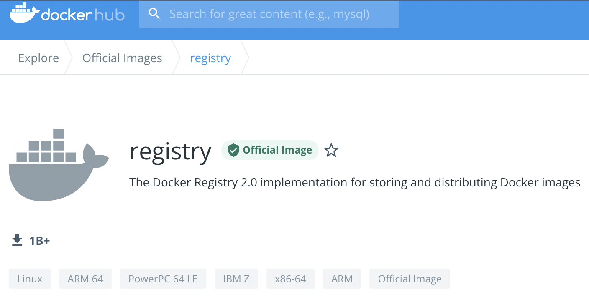
Docker Registry的网页上有很详细的说明，包括下载命令、用法等，我们可以完全照着它来操作。
首先，你需要使用 docker pull 命令拉取镜像：
docker pull registry
然后，我们需要做一个端口映射，对外暴露端口，这样Docker Registry才能提供服务。它的容器内端口是5000，简单起见，我们在外面也使用同样的5000端口，所以运行命令就是 docker run -d -p 5000:5000 registry ：
docker run -d -p 5000:5000 registry
启动Docker Registry之后，你可以使用 docker ps 查看它的运行状态，可以看到它确实把本机的5000端口映射到了容器内的5000端口。
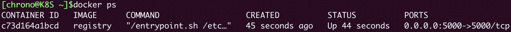
接下来，我们就要使用 docker tag 命令给镜像打标签再上传了。因为上传的目标不是默认的Docker Hub，而是本地的私有仓库，所以镜像的名字前面还必须再加上仓库的地址（域名或者IP地址都行），形式上和HTTP的URL非常像。
比如在这里，我就把“nginx:alpine”改成了“127.0.0.1:5000/nginx:alpine”：
docker tag nginx:alpine 127.0.0.1:5000/nginx:alpine
现在，这个镜像有了一个附加仓库地址的完整名字，就可以用 docker push 推上去了：
docker push 127.0.0.1:5000/nginx:alpine
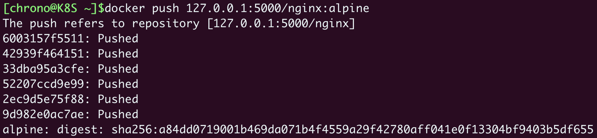
为了验证是否已经成功推送，我们可以把刚才打标签的镜像删掉，再重新下载：
docker rmi 127.0.0.1:5000/nginx:alpine
docker pull 127.0.0.1:5000/nginx:alpine
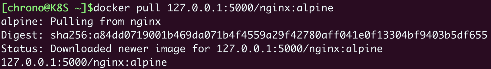
这里 docker pull 确实完成了镜像下载任务，不过因为原来的层原本就已经存在，所以不会有实际的下载动作，只会创建一个新的镜像标签。
Docker Registry虽然没有图形界面，但提供了RESTful API，也可以发送HTTP请求来查看仓库里的镜像，具体的端点信息可以参考官方文档（https://docs.docker.com/registry/spec/api/），下面的这两条curl命令就分别获取了镜像列表和Nginx镜像的标签列表：
curl 127.1:5000/v2/_catalog
curl 127.1:5000/v2/nginx/tags/list
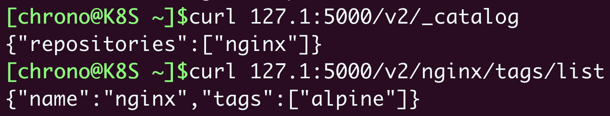
可以看到，因为应用被封装到了镜像里，所以我们只用简单的一两条命令就完成了私有仓库的搭建工作，完全不需要复杂的软件安装、环境设置、调试测试等繁琐的操作，这在容器技术出现之前简直是不可想象的。
搭建WordPress网站
Docker Registry应用比较简单，只用单个容器就运行了一个完整的服务，下面我们再来搭建一个有点复杂的WordPress网站。
网站需要用到三个容器：WordPress、MariaDB、Nginx，它们都是非常流行的开源项目，在Docker Hub网站上有官方镜像，网页上的说明也很详细，所以具体的搜索过程我就略过了，直接使用 docker pull 拉取它们的镜像：
docker pull wordpress:5
docker pull mariadb:10
docker pull nginx:alpine
我画了一个简单的网络架构图，你可以直观感受一下它们之间的关系：
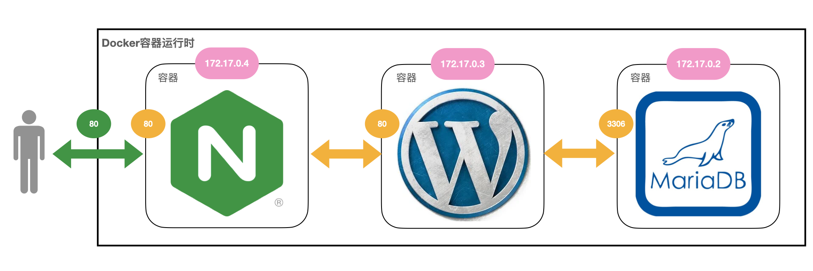
这个系统可以说是比较典型的网站了。MariaDB作为后面的关系型数据库，端口号是3306；WordPress是中间的应用服务器，使用MariaDB来存储数据，它的端口是80；Nginx是前面的反向代理，它对外暴露80端口，然后把请求转发给WordPress。
我们先来运行MariaDB。根据说明文档，需要配置“MARIADB_DATABASE”等几个环境变量，用 --env 参数来指定启动时的数据库、用户名和密码，这里我指定数据库是“db”，用户名是“wp”，密码是“123”，管理员密码（root password）也是“123”。
下面就是启动MariaDB的 docker run 命令：
docker run -d --rm \
--env MARIADB_DATABASE=db \
--env MARIADB_USER=wp \
--env MARIADB_PASSWORD=123 \
--env MARIADB_ROOT_PASSWORD=123 \
mariadb:10
启动之后，我们还可以使用 docker exec 命令，执行数据库的客户端工具“mysql”，验证数据库是否正常运行：
docker exec -it 9ac mysql -u wp -p
输入刚才设定的用户名“wp”和密码“123”之后，我们就连接上了MariaDB，可以使用 show databases; 和 show tables; 等命令来查看数据库里的内容。当然，现在肯定是空的。
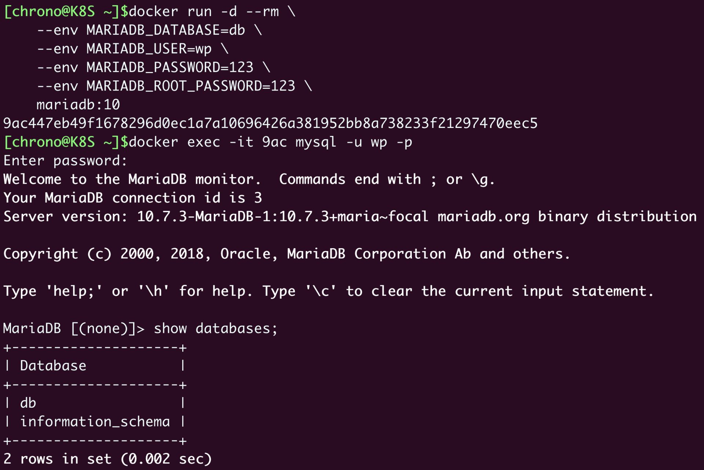
因为Docker的bridge网络模式的默认网段是“172.17.0.0/16”，宿主机固定是“172.17.0.1”，而且IP地址是顺序分配的，所以如果之前没有其他容器在运行的话，MariaDB容器的IP地址应该就是“172.17.0.2”，这可以通过 docker inspect 命令来验证：
docker inspect 9ac |grep IPAddress
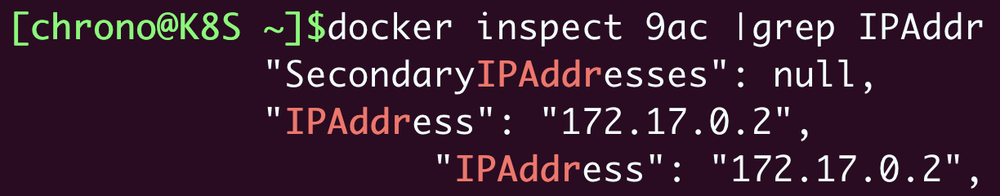
现在数据库服务已经正常，该运行应用服务器WordPress了，它也要用 --env 参数来指定一些环境变量才能连接到MariaDB，注意“WORDPRESS_DB_HOST”必须是MariaDB的IP地址，否则会无法连接数据库：
docker run -d --rm \
--env WORDPRESS_DB_HOST=172.17.0.2 \
--env WORDPRESS_DB_USER=wp \
--env WORDPRESS_DB_PASSWORD=123 \
--env WORDPRESS_DB_NAME=db \
wordpress:5
WordPress容器在启动的时候并没有使用 -p 参数映射端口号，所以外界是不能直接访问的，我们需要在前面配一个Nginx反向代理，把请求转发给WordPress的80端口。
配置Nginx反向代理必须要知道WordPress的IP地址，同样可以用 docker inspect 命令查看，如果没有什么意外的话它应该是“172.17.0.3”，所以我们就能够写出如下的配置文件（Nginx的用法可参考其他资料，这里就不展开讲了）：
server {
listen 80;
default_type text/html;
location / {
proxy_http_version 1.1;
proxy_set_header Host $host;
proxy_pass http://172.17.0.3;
}
}
有了这个配置文件，最关键的一步就来了，我们需要用 -p 参数把本机的端口映射到Nginx容器内部的80端口，再用 -v 参数把配置文件挂载到Nginx的“conf.d”目录下。这样，Nginx就会使用刚才编写好的配置文件，在80端口上监听HTTP请求，再转发到WordPress应用：
docker run -d --rm \
-p 80:80 \
-v `pwd`/wp.conf:/etc/nginx/conf.d/default.conf \
nginx:alpine
三个容器都启动之后，我们再用 docker ps 来看看它们的状态：
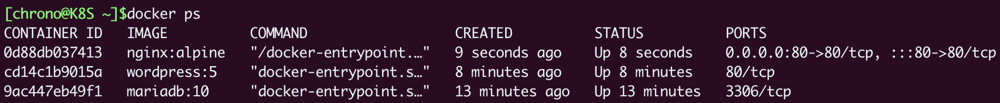
可以看到，WordPress和MariaDB虽然使用了80和3306端口，但被容器隔离，外界不可见，只有Nginx有端口映射，能够从外界的80端口收发数据，网络状态和我们的架构图是一致的。
现在整个系统就已经在容器环境里运行好了，我们来打开浏览器，输入本机的“127.0.0.1”或者是虚拟机的IP地址（我这里是“http://192.168.10.208”），就可以看到WordPress的界面：
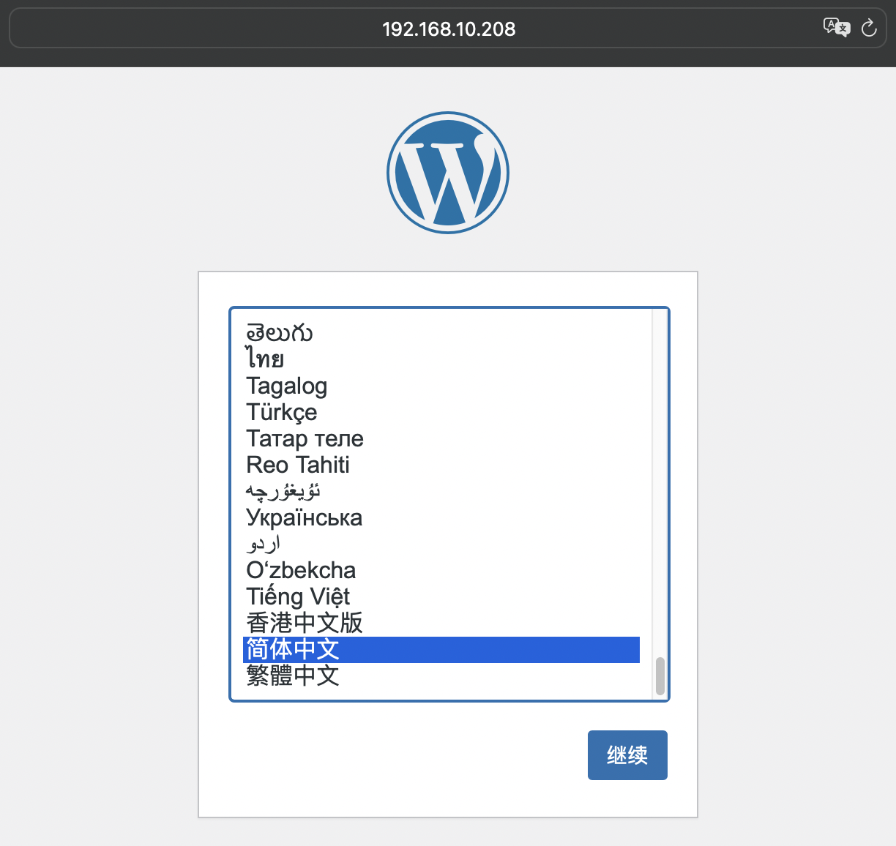
在创建基本的用户、初始化网站之后，我们可以再登录MariaDB，看看是否已经有了一些数据：
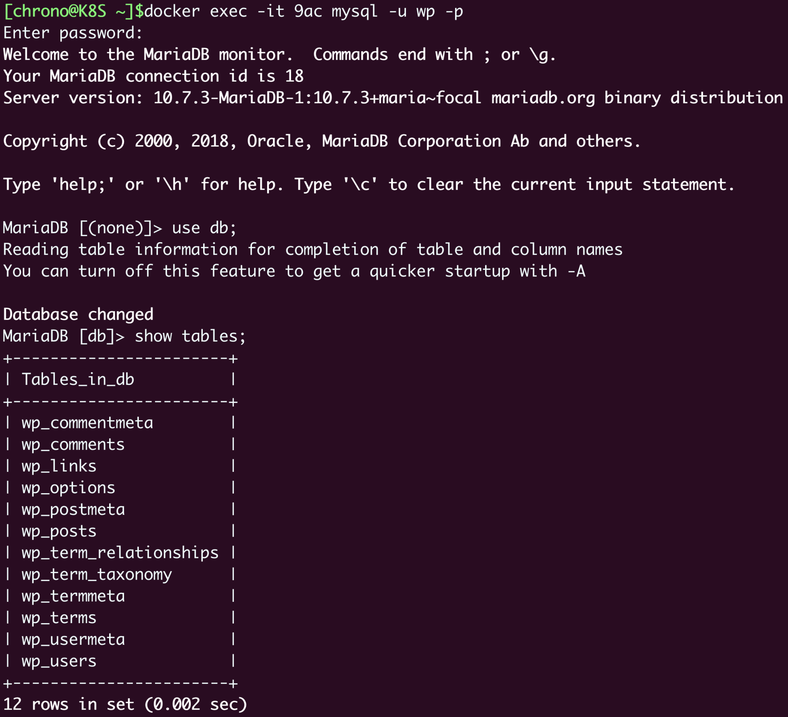
可以看到，WordPress已经在数据库里新建了很多的表，这就证明我们的容器化的WordPress网站搭建成功。
小结
好了，今天我们简单地回顾了一下容器技术，这里有一份思维导图，是对前面所有容器知识要点的总结，你可以对照着用来复习。
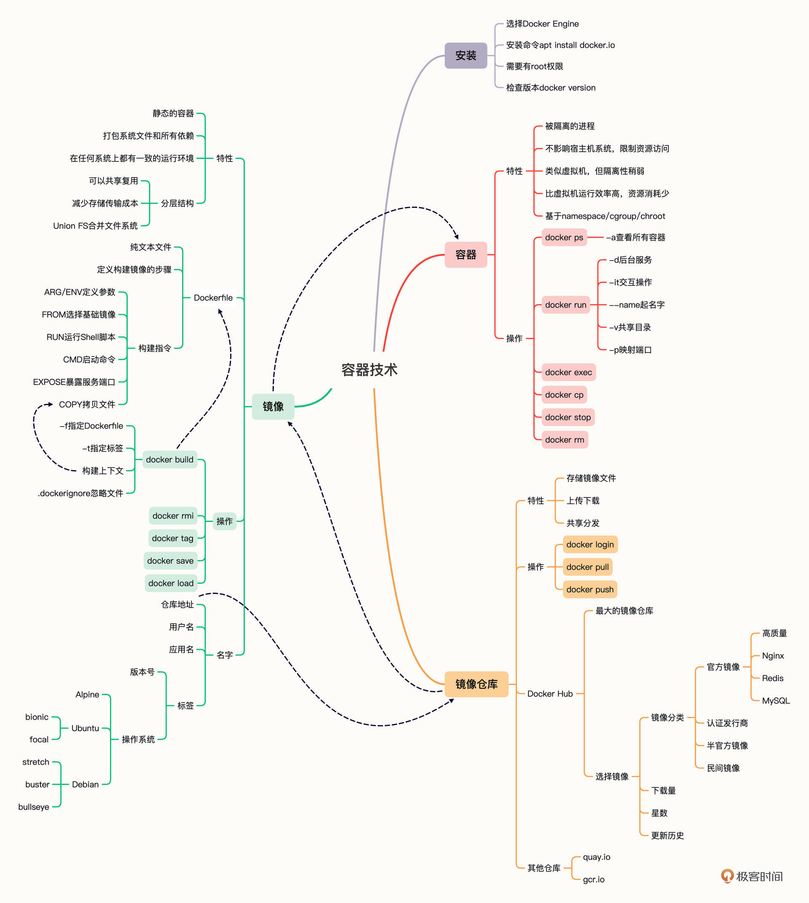
我们还使用Docker实际搭建了两个服务：Registry镜像仓库和WordPress网站。
通过这两个项目的实战演练，你应该能够感受到容器化对后端开发带来的巨大改变，它简化了应用的打包、分发和部署，简单的几条命令就可以完成之前需要编写大量脚本才能完成的任务，对于开发、运维来绝对是一个“福音”。
不过，在感受容器便利的同时，你有没有注意到它还是存在一些遗憾呢？比如说：
- 我们还是要手动运行一些命令来启动应用，然后再人工确认运行状态。
- 运行多个容器组成的应用比较麻烦，需要人工干预（如检查IP地址）才能维护网络通信。
- 现有的网络模式功能只适合单机，多台服务器上运行应用、负载均衡该怎么做？
- 如果要增加应用数量该怎么办？这时容器技术完全帮不上忙。
其实，如果我们仔细整理这些运行容器的 docker run 命令，写成脚本，再加上一些Shell、Python编程来实现自动化，也许就能够得到一个勉强可用的解决方案。
这个方案已经超越了容器技术本身，是在更高的层次上规划容器的运行次序、网络连接、数据持久化等应用要素，也就是现在我们常说的“容器编排”（Container Orchestration）的雏形，也正是后面要学习的Kubernetes的主要出发点。
课下作业
最后是课下作业时间，给你留两个思考题：
- 学完了“入门篇”，和刚开始相比，你对容器技术有了哪些更深入的思考和理解？
- 你觉得容器编排应该解决哪些方面的问题？
欢迎积极留言讨论，如果有收获，也欢迎你转发给身边的朋友一起学习。
下节课是视频课，我会用视频直观演示我们前面学过的操作，我们下节课见。-
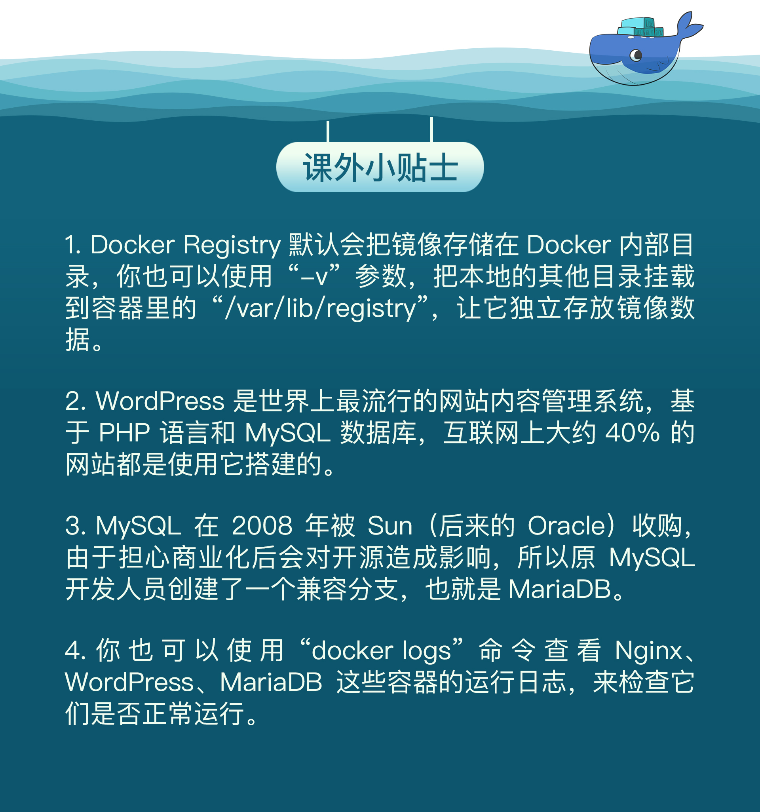
© 2019 - 2023 Liangliang Lee. Powered by gin and hexo-theme-book.